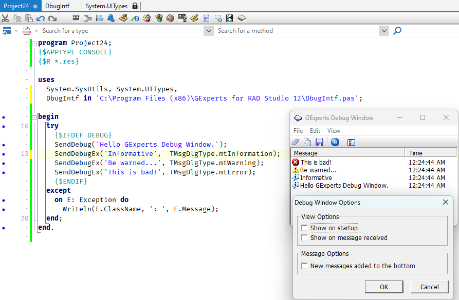

Debug Window |
  
|
Debug Window |
|
The debug window is useful in those situations where it is difficult to use the regular IDE debugger (debugging or data collection with end users, debugging timing sensitive routines, paint routines, etc.). To use the debug window, include the unit DbugIntf.pas that comes with GExperts in your unit's uses clause and then in the spot you need a debug statement inserted, type SendDebug('Debug note');. You may want to wrap your debug statements in a conditional define such as {$IFDEF DEBUG} and create an IDE Code Template to easily insert new debug statements into your code.
Three types of messages can be sent to the debug window: informational, warning, and error. These message types are sent using the mtInformation, mtWarning and mtError constants that are defined in the VCL's Dialogs unit and can be sent using the SendDebugEx command: SendDebugEx('Debug message', mtInformation);. DbugIntf.pas also defines several other useful methods to send data types directly and signal entry into and exiting from methods, etc.
The GExperts Debug Window is a separate program (GExpertsDebugWindow.exe) that sits in the task tray of the Windows shell. If you try to send a debug message and the Debug Window is not running, GExperts will try to start the window automatically. Whenever the window receives a new message, the icon in the task tray will change from a plain paper icon to a paper icon with a pen writing on it.
The Debug Window allows you to clear the message display, copy the messages to the clipboard, save them to a file, pause collection of messages, and configure some basic options.
